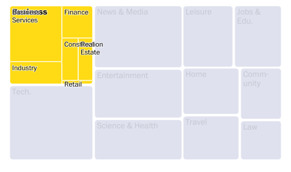
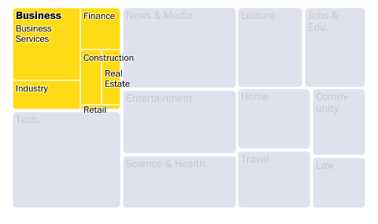
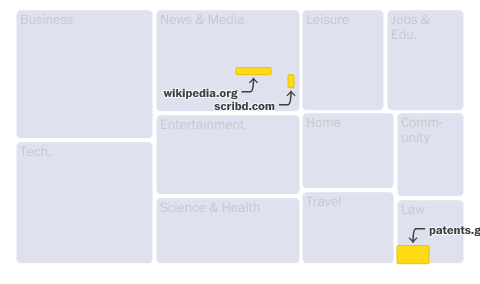
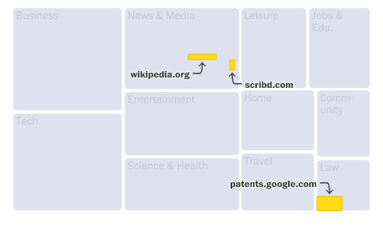

avoid-overlap: Utilities for chart-makers to avoid text overlaps in their graphics
July 10, 2023
I’ve been working on a library to help chart-makers avoid text overlaps in their graphics, and it’s finally in a place worth sharing. Check it out on GitHub or in action at two of my recent graphics.
Labeling charts, maps and other graphics is more art than science, but there are some general rules we can follow to achieve good results programmatically. This library provides two label-avoidance techniques: nudge and choices.
Nudge
The nudge technique resolves overlaps by simply nudging labels away from each other until they no longer collide. You can limit the nudging to specific directions and distances. This technique works well if the thing you’re labeling is an area rather than a specific point.
The following images, from a Washington Post graphic, demonstrate the nudge technique. The labels were passed to avoid-overlap, specifying that nudging the labels either down or to the right would work.
| Before | After |
|---|---|
|  |  |
Choices
The choices technique resolves overlaps by trying a series of positions provided by the user until it finds a combination that works. This technique works well if some number of different positions might work, for example if you are using a leader line or arrow.
In the following example, the labels were passed to avoid-overlap with a list of functions that could draw the label and an arrow in different positions: to the top left, top middle, top right, bottom left, bottom middle and bottom right. The library tries these positions until it finds a combination that works.
| Before | After |
|---|---|
|  |  |
Visual testing
This was my first time using visual testing in a project. I set it up using Storybook and Chromatic, and honestly it worked quite nicely. So far the tests are fairly simple, but I’m hoping this pays off in the future as I refine the overlap avoidance techniques.